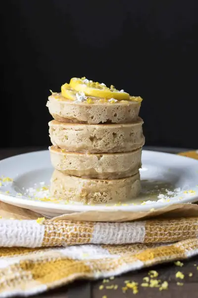

Vegan Lemon Pancakes

Ingredients
- 1¼ cup oat flour
- 3 tablespoons potato starch
- 1 tablespoon baking powder
- ¼ teaspoon sea salt (, divided)
- ¾ cup blanched slivered almonds
- ½ cup almond milk or other dairy free milk (, divided into 2 and 6 tablespoons)
- 6 tablespoons maple syrup (, divided)
- ¼ cup fresh lemon juice (, divided)
- 2 tablespoons lemon zest (Meyer lemons work best)
- 1 tablespoon vanilla extract
- 1 cup powdered sugar (see note)
- 2 tablespoons fresh lemon juice
- ½ teaspoon lemon zest (Meyer lemons work best)
Steps
- Turn up the heat on your griddle, you want it nice and hot for cooking the pancakes. You know it’s ready when you spray some water on it and you hear it sizzle. Also if it is not non stick you should use a spray oil to avoid the pancakes sticking.
- Put the oat flour, potato starch, baking powder and 1/8 teaspoon salt into a bowl and mix well.
- Put almonds into a food processor and blend until they are finely ground.
- Add 2 tablespoons milk, 3 tablespoons maple syrup, 2 tablespoons lemon juice, vanilla extract and the other 1/8 teaspoon salt. Blend until combined. This is the "ricotta."
- Dig a small well in the flour mixture and add the "ricotta" mixture into the well. Next add the 6 tablespoons left of milk, the other 3 tablespoons of maple syrup, the other 2 tablespoons of lemon juice and the lemon zest.
- Slowly mix until well combined, do not overmix but make sure there are no clumps. Allow to settle a few minutes so the mixture can fully combine.
- Drop spoonfuls (about ¼ cup each) onto the griddle. Cook about 4-5 minutes on each side. They should be slightly brown when ready and come off the griddle easily.
- While the pancakes are cooking, make the lemon glaze if using. Whisk powdered sugar, lemon juice and lemon zest in a bowl until smooth.
- Allow the pancakes to cool a bit before eating, this lets the texture settle and fully develop. Drizzle with lemon glaze, maple syrup or anything else you prefer and devour!
Recipe by Anjali Shah, from The Picky Eater. Saved here for personal use; the original has the full notes, tips and photos. Open original